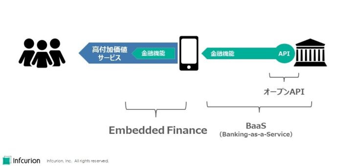
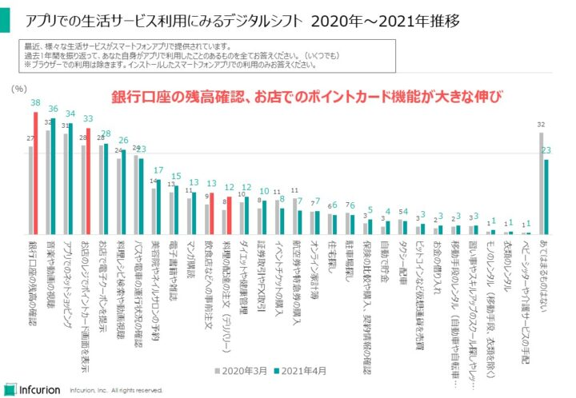

QRコード決済の爆発的普及とともに、コロナ禍による生活スタイルの変化が、買い物・生活・金融におけるデジタルサービス利用を後押ししています。フィンテック領域では、API活用型の金融サービスモデルであるバンキング・アズ・ア・サービス（BaaS）、そして異業種サービスに金融を組み込む提供形態であるEmbedded Finance（エンベデッド金融）の流れが加速しています。
ビジネス環境が激変していく中、進行中の「社会DX」においてフィンテックの果たす役割は確実に拡大しているように感じます。まさに「DX via Fintech（フィンテックを通したDX）」が大きな論点となっています。
そんな日本のフィンテックを、インフキュリオンが選んだ１０大ニュースで振り返りたいと思います。
目次
金融を身近にするEmbedded Finance始動
２０２１年のフィンテックニュースといえば第一はやはりEmbedded Finance（エンベデッド金融）。非金融の生活サービスの業務アプリに金融機能を組み込む（エンベデッドする）ことでより高付加価値なサービスを創出する取り組みです。
２０２１年３月に金融庁と日本経済新聞社が共催したフィンテックイベント「Fin/Sum（フィンサム）２０２１」では日本銀行の黒田総裁が「情報システムと金融システムの融合、アズ・ア・サービスの先にあるもの」と題したビデオメッセージにおいてEmbedded FinanceとBanking-as-a-Service（BaaS）に言及するなど、国内金融業界の大きな動きとなっています。我々インフキュリオンが１０月に開催したオンラインイベント「Embedded Finance Week 2021」へは筆者の想像を大きく上回る数の参加があり、業界の関心の高さを実感しました。
このインフキュリオン・インサイトではBaaSについては２０２０年１０大ニュースにて「API連携の新ビジネスモデル・BaaSが始動」としてとりあげていましたが、BaaSはあくまでも金融事業者側のビジネスモデル。ユーザーからすれば利用しているサービスの裏の作りの部分の話しですので、ユーザーサイドで意識されるようなものでは本来はありません。
それに対し、Embedded Financeはユーザーからみたサービスの利便性向上に直接貢献するもの。金融以外の業界においても、Embedded Financeへの取り組みは大きな戦略論点となります。米国の有力ベンチャーキャピタルのアンドリーセン・ホロウィッツは「（金融以外を含む）すべての事業者はこれからフィンテック企業になってゆく」とまで述べていますが、これは非金融サービスにおいてもEmbedded Financeによって組み込んだ金融機能がユーザー訴求やマネタイズにおける大きな論点となるという趣旨でした。
BaaSはEmbedded Financeの有力な実現手法の一つで、そのBaaSは金融機関のオープンAPIで実現されています。この関係を図に表すとこのようになります：

Embedded Finance、BaaS、オープンAPIの位置づけ
米国ではApple、Walmart、Amazon、Uber、Intuitなど大手有名企業の成功事例が続出しているEmbedded Financeですが、日本のEmbedded Financeは始まったばかり、２０２１年はまさに「Embedded Finance元年」でした。国内事例としては住信SBIネット銀行の「ネオバンク」が良く知られ、既にJAL、Tマネー、ヤマダファイナンスの事例が公表されています。我々インフキュリオンも協力している新生銀行グループ「BANKIT」もEmbedded Financeのための金融側の仕組みと言えます。BaaSに精力的に取り組んできた金融機関であるみんなの銀行やGMOあおぞらネット銀行の動きも注目です。三菱UFJ銀行とNTTドコモが手を組んで提供するというデジタル金融サービスもEmbedded Financeの流れに位置付けられるでしょう。
また、Embedded Financeは銀行限定のものではなりません。１０月に発表された損保ジャパンとShopifyの提携も、ShopifyユーザーであるEC事業者にEC事業で必要となる保険を自然な導線で提供するものであるという点でEmbedded Finance（もしくはEmbedded Insurance）の事例と考えられます。
ユーザー、非金融事業者、そして金融事業者の3者がWin-Win-WinとなりうるEmbedded Financeはまだ始動したばかり。成功パターンの模索は始まったばかりですが、デジタル金融利用のすそ野を大きく広げ金融サービス市場を活性化させてゆくものとして今後も期待大です。
関連記事
- 「Embedded Finance海外事例 〜急成長を続ける先駆者Green Dot〜」、インフキュリオン・インサイト、２０２１年９月２０日
- 「国内外で注目される「Embedded Finance（エンベデッド金融）」とは」、インフキュリオン・インサイト、２０２１年６月２３日
- 「BaaS（Banking as a Service）とは？ ゴールドマン・サックスの事例」、インフキュリオン・インサイト、２０２０年１１月８日
BNPLの成長性が注目を集める
「後払いといえばクレジットカード」だったのは２０２０年まで。２０２１年は新たな後払いサービスとしてBNPL（Buy-Now-Pay-Later）が注目を浴びた年でした。その名のとおり「ECで買った商品が届いた後で支払う」という決済サービスのことで、買い物のたびに個別に与信審査が行われること、一度の利用金額の上限が数万円程度と低めに設定されていることなどがクレジットカードと異なっています。国内の法制度と整合するかたちで、返済方法は２か月以内の一括払いが基本となっています。当社リサーチによると約６人に１人はBNPL利用経験があり、その普及度は決済業界の多くの人の想像を上回るものでした。
もともと欧米諸国ではリボ払いが主流であるクレジットカードに対する低コストの代替決済手段として拡大してきており、スウェーデン発のKlarna、米国のAffirm、豪州Afterpayなどが有名です。２０２１年にはKlarnaはStripeと提携、Afterpayは米Block（旧称Square）が3兆円で買収、AffirmはAmazonと提携するなど、海外でも切れ目なく大きなニュースが続いた感がありました。
国内では、９月にPaidyを米PayPalが3000億円で買収という報道が駆け巡ったころから大きな注目を集め始めた感があります。しかし国内BNPLの歴史は長く、業界首位のネットプロテクションズの創立は２０００年です。同社の２０２１年３月期年間取扱高は4381億円（対前年16.3%増）、この記事の執筆を進めている１２月には東証１部への新規上場を果たしました。
BNPL国内取扱高は1兆円程度といわれ、クレジットカードと比べるとかなり小規模ですが、今後5年間で急拡大していくとみられ、その成長性に注目が集まっています。
面白いのは、国内の消費者にとってのBNPLの訴求点。欧米諸国と違ってクレジットカード利用に手数料を払う人が少ない国内では、「BNPLの低コスト性」が訴求点にはなりえません。
当社リサーチによると、国内のBNPLユーザーの7割はクレジットカード利用者でもあります。つまり、BNPLユーザーはクレジットカードと併用し場面によって使い分けていることがわかっています。そしてBNPL利用理由を調査したところ、トップは「手持ちのお金が不足している時」、2位は「購入時の決済が面倒な時」、3位は「ネットショッピングなどで先払いするのが不安な時」という結果でした。クレジットカード番号の入力が不要な点、商品が実際に届いてから支払うことができる点が高く評価されていることがわかりました。初めて利用するECサイトに対して抱く不安や、衣料品は試着してから購入したいというニーズに合致した決済手段として拡大してきていることが判明しています。小売事業者にとっては、BNPL導入で売上が目に見えて増大するケースもあるようです。
諸外国とちがい、クレジットカードを補完する決済手段として拡大している日本のBNPL。２０２２年以降はより多くの小売事業者での導入が進んでいくと思われます。
関連記事
- 「BNPL（後払い決済）の最新動向調査 6人に1人が利用経験あり」、インフキュリオン・インサイト、２０２１年７月２１日
デジタルチャネルでの金融利用が拡大
フィンテックの最新形態としてのEmbedded Financeについては冒頭で取り上げました。金融事業者が用意したアプリやWebサイト、店舗といったサービスチャネルにユーザーが訪問するという「直販モデル」から脱却し、ユーザーが日常的に利用する異業種サービスにおいて自然な導線で金融サービスを利用するという「間接モデル」を実現するという点で革新的なサービスモデルです。
しかしEmbedded Financeの成功には大きな前提条件があります。それは「国内ユーザーは日常生活においてアプリを多用しており、そうしたアプリにおいて金融機能を利用するニーズがある」という仮説です。そもそも諸外国に比べて金融デジタルチャネル利用が低水準にあった日本です。この仮説の検証はEmbedded Finance関連事業者にとって重要課題となるはずです。
結論からいうと、日本人の金融デジタルチャネル利用は新型コロナウイルス禍の影響もあり急速な拡大の傾向にあります。根拠は当社の独自リサーチ。様々な生活サービスのアプリ利用について２０２０年３月と２０２１年４月に同じフォーマットで調査したところ、１年間でアプリ利用は全体的に増加傾向で、特に「銀行口座の残高の確認」が大きく伸びてなんと利用率トップであることがわかりました（下の図を参照）。

アプリでの生活サービス利用にみるデジタルシフト ２０２０年～２０２１年推移
銀行口座の残高確認以外では、「お店のレジでポイントカード画面を表示」や「飲食店などへの事前注文」、「料理の配達の注文（デリバリー）」なども大きな伸びを記録。買い物行動のデジタルシフトも鮮明に表れています。また、多くの生活サービスアプリはもともプリペイド決済やBNPLなどの決済系金融機能と高い親和性を持っています。
アプリ利用の増大にみる消費者生活のデジタルシフトで、Embedded Financeの成功の土台が整っていっているといえます。
関連記事
- 「日本のキャッシュレス決済 ～電子マネー/QRコード決済の利用率・シェア［決済動向調査2021］～」、インフキュリオン・インサイト、２０２１年８月１１日
キャッシュレス手数料問題が店舗DXの議論へ
２０１９年１０月の消費増税のタイミングで実施された経産省の「キャッシュレス消費者還元事業」、そしてPayPayを始めとするQRコード決済の普及拡大で、キャッシュレス決済を利用できる店舗数はこの数年で大きく拡大しました。いまや「現金のみ」という店舗は減少し、カードが利用できなくとも何等かのQRコード決済に対応している中小店舗も多くみられます。
国のポイント還元事業やPayPayなど大手QRコード勢が次々に打つキャンペーンが多くの小売事業者のキャッシュレス化を後押ししたのは確実です。ポイント獲得意欲・利用意欲の旺盛な顧客を確実につなぎとめるためにもキャッシュレス決済の導入は必須でした。ポイント原資の負担はなく、さらにQRコード決済各社が中小事業者向けの加盟店手数料を無料としていたことも大きく作用したはずです。
しかし２０２１年はキャッシュレス決済の手数料が大きな注目を浴びます。１０月には予告通りPayPayが加盟店手数料を有料化、対する競合各社は無料キャンペーンの延長など対抗策を打ちました。当社リサーチによるとPayPayの利用率は37%、トップの楽天カード（43%）に次ぐ国内２位。しかもQRコード決済では２位の楽天ペイ（14%）を大きく引き離すダントツトップです。多くの消費者の支持を得ているPayPayの有料化によって、加盟店はキャッシュレス決済の経済価値を真剣に考えることを強いられることになりました。手数料に見合った効果が得られているのか否か、という問題です。
同様の議論がカード決済分野でも活発化しています。２０１９年の公正取引委員会による調査報告を受け、経済産業省では「キャッシュレス決済の中小店舗への更なる普及促進に向けた環境整備検討会」を立ち上げて手数料の開示や手数料水準の妥当性等に関して議論を行っていますが、そこではカード決済によって加盟店が得るメリットの明確化も論点として挙がっています。
カードであれQRコード決済であれ、キャッシュレス決済の加盟店メリットはその集客効果にあり、手数料はその対価であるというのが従来の考え方でした。決済事業者もそのように店舗に対して営業することが多いようです。
ほかには、キャッシュレス決済の店舗オペレーションの負荷軽減効果を評価する加盟店もあります。キャッシュレス推進協議会による調査研究では、現金を扱う場面が減ることで業務が楽になるという声が記録されています。
ただし、キャッシュレス決済サービスが多様化し、多数のサービスに店舗が加盟するような状態では、キャッシュレス決済が逆に店舗負荷を増大させてしまうという側面もあります。例えば、キャッシュレス決済での売上がいつ入金されるのか把握しづらく、店舗の経営状況を把握することが困難化する、といった課題です。中小店舗でキャッシュレス決済が普及してきたのはごく最近であるため、キャッシュレス決済がもたらす店舗負荷についてはあまり認知されていませんでした。（一つの方向性として、我々インフキュリオンがりそなグループへ提供開始したキャッシュレス決済の一元管理ダッシュボード「PayDash」があります。）
QRコード決済の飛躍とともに消費者に広く普及したキャッシュレス決済ですが、中小店舗にも隅々に行き渡ってゆくには、手数料に関する議論は避けてとおれません。キャッシュレス決済に加盟することで店舗経営にどのようなメリットがあるか、キャッシュレス決済導入がもたらす負荷をどのように回避し業務改善を実現するのか、という「店舗DX」の観点がクローズアップされ始めたのが２０２１年の大きな動きのひとつでした。
関連記事
- 「キャッシュレス事業者による店舗支援の海外動向～Square、Stripe、Shopify、Intuit～」、インフキュリオン・インサイト、２０２１年１１月９日
デジタル商品券と地域通貨が自治体DX施策へと発展
新型コロナウイルス感染拡大で悪化した地域経済のテコ入れを目的とし、２０２０年から各地の自治体で「プレミアム付商品券」の発行が相次いでいます。また、使い切り型のいわゆる商品券だけでなく、繰り返し入金して継続利用できることで地域通貨として普及させてゆくケースも見られます。
従来は紙の商品券を発行し、精算も紙ベースということで運用コストが大きな課題となっていました。近年は民間のQRコード決済が広く普及したおかげで、レジ周辺でアプリを操作することに抵抗が少ない消費者も多くなったことから、QRコードを活用したデジタル商品券や地域通貨を発行するケースも増えてきています。この場合、スマホアプリでのQRコードの提示や読み取りだけでなく、紙のカードに印刷したQRコードを用いることで、スマホが苦手な高齢者にも配慮したスキームとすることも多くあります。
当社が２０２１年４月に２万人を対象に実施したリサーチによると、自治体が発行する「プレミアム付商品券」は紙での利用が30%、デジタル版での利用が11%となりました。今後の利用意向は紙、デジタルともに60%以上が利用を希望しました。利用経験者の少ないデジタル版においても、今後の利用意向は紙版に劣らないという点は、今後のデジタル版の普及にとって追い風となると思われます。（日本のキャッシュレス決済 ～電子マネー/QRコード決済の利用率・シェア［決済動向調査2021］～）
このような商品券や地域通貨は従来、消費喚起と地域経済活性化が主目的でした。しかし最近では、自治体業務のデジタル化、すなわち「自治体DX」のプラットフォームとして推進されるケースが出てきています。自治体の住民に「お金」を配布する機能を自治体自身が持つことで、各種の給付業務を効率化することができたり、域内でのみ利用可能な「自治体ポイント」をインセンティブとして住民による地域社会への参画を促すことができるようになります。
そのような自治体DXを明確に意識した地域通貨としては埼玉県深谷市の「ネギー」があります。導入の背景には「地域通貨を活用した新たな行政運営」が謳われています。
民間発行の地域通貨が自治体と連携することで自治体DX施策の色彩を帯びる例もあります。２０１７年から地域通貨「さるぼぼコイン」を発行している飛騨信用組合は２０１９年に飛騨市と提携し、さるぼぼコインアプリにて災害情報、交通情報、クマの出没情報などを配信することで住民への情報発信の一部を担ってきています。
また、高知県香美市では、地域電子マネー「kamica」の開始にあたり、プリペイド式のQRコードカードを２万６千人の全市民への郵送しました。さらに運用開始日に全対象者に１万円を自治体から入金することで利用を促しました。このように全市民へのチャージ手段を自治体が確保することは、今後の市民への祝い金等の支給などへの活用が広がる可能性を秘めています。
経費精算から広がり始めたSME向けフィンテック
SME（中小事業者）に馴染み深い金融サービスといえば決済と融資ですが、これらの分野でフィンテックが大きなインパクトをもたらした印象はありません。SMEが関与するBtoB決済は銀行振込が大多数のため既にキャッシュレス化されており、それが別のキャッシュレス決済サービスで置き換わるような動きはありませんでしたし、決済データ等を活用したビジネス融資も広く普及しているとはまだいえません。
そんな中、２０２１年になって、SMEの事業運営に貢献できるようなフィンテックが広がりを見せてきています。SMEのお金の流れのうち、多大な非効率が残っていた経費精算がその分野です。
当社とクラウドキャスト社が２０２１年３月に共同で実施した「コロナ禍における経費の立て替えと支払いに関する調査」によると、企業や団体の就労者6829人のうち52%は直近1年間で仕事に必要な経費を個人で立て替えた経験がありました。また、経費を立て替え払いする際の支払い方法を複数回答で調査したところ、もっとも利用されていたのが「現金」（87%）で、2位の「クレジットカード」（55%）を大きく引き離していました。
現金で立替え払いした場合、精算のための証憑はレシート（領収書）しかないため、紙ベースの精算業務が根強く残る要因となります。また、就労者にとっては勤務先に「お金を貸している」という状態が続くことで不都合が生じることもあるでしょう。理想的には、業務に必要な経費は会社が直接支払うほうが効率的のはずで、法人カードという手段もありますが、実際には従業員全員に法人カードを配布するようなことは行われていません。従来の法人カードは、不正利用や誤使用のリスクが大きく、従業員に広く配布するには不向きでした。
そうした「従業員による会社資金での購買」のためのフィンテックサービスが国内外で相次いで登場しています。米国では、会社への与信枠を部門やプロジェクトに割り当てたうえで、所属する従業員による支出を管理できるサービスを展開するDivvy（２０２１年６月にBill.comが25億ドルで買収）。そして国内ではクラウドキャストが運営する法人プリペイドカード一体型経費精算サービス「Staple」があります。従業員に経費精算用Visaプリペイドを配布することで決済から経費精算までを効率的に処理することができるというもので、我々インフキュリオンの事業者向けVisa発行プラットフォーム「Xard」を活用して実現されています。
単なる決済だけでなく、経費精算など後続の経理業務まで一気通貫でサポートするタイプのサービスは２０２１年に続々と登場しています。フィンテック事業者によるものでは「マネーフォワードビジネスカード」、「freeeカード」、カード会社によるものとしては三井住友カードが「経費精算の完全自動化」を謳ったサービスを投入しています。
２０２２年１月には、電子データとして受領した請求書や領収書の電子保存を義務付ける電子帳簿保存法が施行されます。２年間の猶予期間があるとはいえ、紙が主体だった経理業務が一気にデジタル化することになります。多くのSMEに共通的な非効率業務である「紙ベースの経費精算」が、決済＋経費精算をカバーするフィンテックサービスによって塗り替えられている素地が整ってきています。
国産フィンテックに海外勢も注目、国内支援も充実化
フィンテックが世界的に盛り上がり始めた２０１５年ごろですが、国内ではいち早く一般社団法人Fintech協会が立ち上がっています。グローバルの潮流を見据えつつ、オープンAPIの制度などでは時に世界の一歩先をゆくようなスピード感でフィンテック事業環境が整えられてきたことは国内フィンテック業界が誇れることだと思っています。
しかし国内フィンテック業界にはどうしても「国内で閉じている感」がありました。もちろん、アジアに広く展開しているOmiseやカンボジアのCBDC（中央銀行デジタル通貨）を担うソラミツ、BNPLで台湾に進出しているネットプロテクションズなどグローバルを指向する事業者は少なくありません。しかし、華々しく報じられるグローバルフィンテック動向に日本企業はあまり登場せず、海外からの熱い視線を感じられなかったのが正直なところです。
そんな印象が大きく変わったのが２０２１年でした。７月にはあのGoogleによるpring（プリン）買収、そして９月にはPayPalによるPaidy買収と、グローバル大手による国産フィンテックの取りこみが相次いで報じられました。特にPaidy案件では3000億円が動くという超大型案件で、本拠地・米国でBNPL各社と激しい競争を繰り広げるPayPalの日本市場への意気込みが伝わってきます。買収成立となり表にでてきたのはこれら２案件ですが、海外勢の日本市場への活発なアプローチは続いていると想像します。
また、フィンテックスタートアップへの熱い視線は海外からだけではなく、国内での支援も充実化してきています。8月に公表された金融庁の「２０２１事務年度金融行政方針」では「スタートアップ等によるイノベーションを促進するためには成長資金の供給促進がカギ」とされ、２０２１事務年度の作業計画に「スタートアップエコシステムに資する資金供給のあり方について検討」が盛り込まれています。
さらに、経済産業省が推進するスタートアップ企業の育成支援プログラム「J-Startup」ではお金のデザイン、マネーフォワードが対象に選ばれていたところ、２０２１年の第3次選定ではさらに、途上国におけるマイクロファイナンスの五常・アンド・カンパニーやeKYCのTrustdockも選ばれるなどフィンテック分野からの選定も相次いでいます。
こうした国内外からの注目と支援をうける日本のフィンテック。２０２２年以降のさらなる成長にも期待が集まります。
金融サービス多様化を支える法制度が続々と実現
フィンテックによって金融サービスがもっと身近に、もっと便利になる。ユーザーが増大し金融サービス市場が拡大する。非金融サービスにも金融サービスが組み込まれることで利用導線上の障壁が減っていき、マス層でのデジタル金融利用が促進される。
こうしたフィンテック拡大がもたらす好循環を実現するため、国もフィンテック環境整備に動いています。２０２１年は３つの大きな動きがありました。
「登録少額包括信用購入あつせん業者」の制度が始動（４月）
２０２０年６月に改正された割賦販売法の施行によって始まった制度で、極度額10万円以下の範囲内でクレジットカードのような「包括信用購入あっせん」を行うことができるものです。クレジットカードよりも制度対応負荷が軽くなっており、少額利用がメインのBNPLの安全性を担保しつつサービス創生による市場活性化を促すことを目的としたものです。
100万円を超える送金が可能な「第一種資金移動業」の創設（５月）
改正資金決済法の施行で、従来の100万円という制限を超えた資金移動が可能になりました。フィンテックなど、銀行以外の業者による送金系サービスの充実の土台となる制度です。
「金融サービス仲介業」の制度はじまる（１１月）
2020年に成立した金融サービス提供法の施行で、非金融事業者による金融商品の仲介がしやすくなりました。Embedded FinanceやBaaSによる「間接チャネルモデル」でのサービス提供にも関します。
新制度の詳細な解説は他に譲ります。フィンテックに関する法制度環境整備はこれからも停滞することなく続いていくとみられます。
デジタル金融時代に向けた銀行自己変革の動き
フィンテックが登場したとき、既存金融業界にとって脅威と思われていました。モバイルファーストで構築された自然な利用導線、APIを介した柔軟な異業種連携、クラウド技術を活用した迅速なサービス開発力などで、金融サービスに対する消費者の期待レベルを押し上げたことは、旧来のやり方を踏襲したい業者にとっては脅威だったかもしれません。
しかしフィンテックの成功要因は既存事業者にも同様にあてはまります。技術と社会の潮流に合わせて変革していくならば、信頼できるブランドと法令順守体制を持つ既存金融機関にむしろ勝機があるとも考えられます。
２０２１年の銀行業界の大きなニュースと言えば、40年以上固定だった振込手数料の大幅な値下げ。公正取引委員会の調査報告をきっかけとする、受け身の対応だったのかもしれませんが、痛みを伴いながらも利用者の利便性を高める施策をとった姿勢は評価できます。
事例が増えてきているATMの撤去や通帳の有償化も、サービスレベル後退という要素の否定できませんが、デジタル金融時代に向けた生き残りには必要な自己変革とも考えられます。
５月に立ち上がったふくおかFGのデジタル銀行・みんなの銀行や、フィンテック活用による収益改善を柱の一つとするSBIグループによる地銀業界再編に向けた一連の動きも、巨視的には銀行業界自身による自己変革の取り組みと言えます。
例えば新型コロナ禍の初期の自粛期間は、スマホアプリやブラウザ経由での銀行口座利用を強く後押ししました。また、上ですでに述べたとおり、２０２１年４月までの1年間で最も伸びた生活サービスアプリ利用は「銀行口座の残高確認」でした。金融デジタルチャネル利用の拡大はそのまま既存銀行業界にとって強い武器となるはずです。フィンテックの最新形態であるEmbedded Financeには銀行の果たす役割が最初から織り込まれています。今後もフィンテックにおける銀行や既存金融事業者の存在感は高まってゆくでしょう。
分散型金融DeFiの可能性に期待高まる
国内に限らないグローバルな潮流がDeFiの興隆です。ビットコインなど暗号資産を支える技術であるブロックチェーンを用いて実現されるもので、金融の新たな形態として注目が高まるのと同時に多額の資金が流入しています。報道によるとその市場規模は1000億ドル（11兆円）規模にも達しているようです。
参考
- 「分散型金融11兆円市場に 当局が警戒、通貨の未来問う」、日本経済新聞、２０２１年１０月１８日
従来の金融は、口座情報の維持と更新を担う中央管理者（＝銀行）によるサービス提供が大前提です。ユーザーは中央管理者のみを信頼しサービスを利用することができますが、中央管理者への信頼を担保するために社会は多大なコストを負担しています（金融免許、監査、紛争解決のための裁判所などの制度全てが中央管理者への信頼を創出するために存在しています）。
対してDeFiは、多数のプレイヤーの相互連携と相互監視によって取引を運営するコミュニティ型の金融です。一度書き込まれた情報を改ざんさせないブロックチェーン、契約内容を自動実行するスマートコントラクト、といった最新技術を用いて実現されています。現実世界の権利関係をデジタル世界で流通させることができるデジタル証券、非代替性トークン（NFT）も同様です。
期待の集まるDeFiですが、広く普及するまでにはまだ解決すべき課題が多数あります。英Economist誌は、DeFiの可能性を確かめるため、記事の挿絵の所有権をNFT化してネットオークションで売却してみました。従来は不可能だった取引が可能になる点は本物ですが、入出金に必要な手続きや技術的な準備、そしてNFT取引に必要な「ガス代」などかなりの労力とコストがかかった、とのことでした。
参考
- 「The fun in non-fungible」、Economist、２０２１年１０月30日
DeFiは法制度や技術が追い付いていないフロンティアであり、誤解を恐れずいえばインターネット初期段階のような「無法地帯」でもあります。一般社会に広く普及するレベルまで成熟するにはまだ時間がかかりそうですが、将来の金融においてDeFiの役割がないということはなさそうです。


{kind=link}
{kind=link}